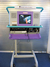

The Starlight Starbright Children's Foundation brightens the lives of seriously ill children. Each year, Starlight serves over 200,000 critically, chronically, and terminally ill children throughout New York, New Jersey and Connecticut. In addition to granting wishes for sick children, Starlight provides distracting entertainment programs on hospital pediatric wards, funds special projects for hospitalized children and conducts a variety of outpatient activities. Starlight's goal is to help seriously ill children experience the simple joys of being a child.
Since its founding in 1999, NYLine was always intended to be more than just the means for its members to acquire opening day tickets for the new "Star Wars" films. The NYLine staff realized the media frenzy surrounding "Star Wars: Episode I - The Phantom Menace" presented a tremendous opportunity to focus the spotlight on a local charity. Because George Lucas, Mark Hamill and others connected to "Star Wars" had a history of involvement with Starlight, NYLine members decided to make its New York, New Jersey and Connecticut chapter the beneficiary of this media attention, as well as individual and group fund-raising activities.
NYLine members raised donations for Starlight through a first-of-its-kind "Stand-A-Thon." Sponsors pledged donations for every hour line members spent on the sidewalk in front of Manhattan's Ziegfeld Theater from May 1 through the film's opening on May 19. Line members also collected contributions from curious passersby during the line and placed collection boxes inside the Ziegfeld for the film's opening weekend. The "Episode I" NYLine raised cash and product donations worth more than $15,000.
For the 2002 release of "Star Wars: Episode II - Attack of the Clones," NYLine members again gathered "Stand-A-Thon" pledges and set up camp in front of the Ziegfeld from April 27 until May 16. Despite rainy conditions for much of that period, NYLiners raised cash and product donations in excess of $18,000. The cash donations went toward Starlight's Fun Center program. Fun Centers are a television, VCR and Nintendo 64 built into an adjustable cart that rolls up to a child's hospital bed. NYLine was one of the top contributors to the Fun Center program in 2002, placing consoles in four New York City hospitals. By directing these donations to a program that brings a much-needed distraction to hospitalized children, NYLine members are able to pass along some of the joy the "Star Wars" films have brought to their lives.
The phenomenon surrounding the release of the new "Star Wars" movies has generated a staggering amount of media attention, and through the use of strategically placed banners, stickers and t-shirts, Starlight has been in the spotlight of all NYLine media coverage. To date, more than 650 news and feature stories on the NYLine and Starlight have appeared in broadcast, print and web media from news organizations around the globe. NYLine has also arranged for Starlight children and their families to see opening-day screenings of the new "Star Wars" films, allowing them to share the energy and excitement surrounding the premiere of each new chapter in George Lucas's tale.
As the "Star Wars" saga concludes in 2005, NYLine once again will be on the street, raising money and awareness for the Starlight Starbright Children's Foundation. If you can't join us for the line, please consider celebrating this momentous event by supporting the Starlight Starbright Children's Foundation.
For more information about the Starlight Starbright Children's Foundation, please visit www.starlight-newyork.org
Thank you for supporting the Starlight Starbright Children's Foundation and the NYLine!
{kind=link}